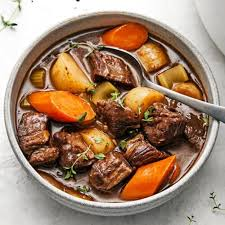

Ingredients
- 1 lb Boneless Beef Chuck
- 1 tbsp oil
- 2 carrots
- 1 large potato
- 1 large pepper
- 1 stalk of celery
- 1 small onion
- 1 Bay leaf
- 2 tbsp flour/li>
- 3 cups water + water for roux
Directions
- Sautee beef until it is browned
- Add 3 cups of water
- Bring to a boil. Reduce heat and simmer covered for 2 hours.
- Stir in remaining ingredients except for flour
- Mix 1/4 cup water and 2 tbsp flour in separate container. Add to stew and stir
- Heat until desired consistency
Home